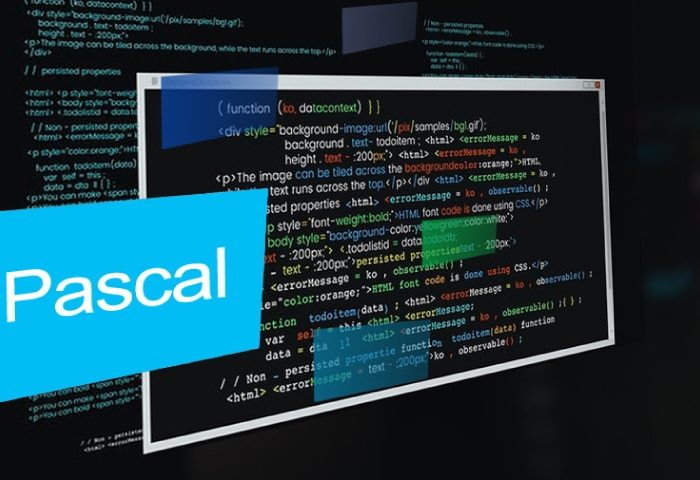

Мой путь в IT
Первоначально я познакомился с наукой "информатика", только в школе. Тогда я впервые попробовал написать собственные программы на Pactal-е, эти программы не отличались особой сложностью и по сути этот предмет мне не очень понравился.
После разгара пандемии наступила пора сдавать экзамены. Тогда, будучи в физмат классе, я выбрал, дополнительным предметом вместе с физикой, информатику. После длительной подготовки и изучению простых вещей, мне очень понраилось заниматься этим делом.
Уже сдав экзамен, летом я попробовал сделать что-то практичное для себя. Увлекся версткой сайтов, так как я только знакомился с IT мне нужно было найти что-то наглядное без каких-либо дополнительных изучений математики и трудных алгоритмов.
После длительных проб и проектов, я понял, что мне не интересна такая разработка. К этому моменту пришла пора вновь сдавать экзамены. Я полностью посветил себя изучению и нарешиванию заданий. В ходе подготовки я познакомился с Python и C++, так же изучив базовые вещи: динамическое программирование, графы, рекурсия и тд.
В тот момент я уже определился с вузом и кафедрой, до этого, изучив учебный план и учитывая свои интересы, которые возникли в ходе общения с одноклассниками и товарищами по сдаче экзаменов.

Поступив в вуз, я нисколько не пожалел о своем выборе. Это то место где я действительно могу найти что-то интересное и полезное. На первом курсе я увлекся языком C из-за его легкости синтаксиса и трудных вещей которые можно реализовать с помощью него.
Уже в следующем семестре я с сокурсниками поехал на конкурс инженерных команд в город Саранск. К сожалению, нам не удалось занять высокого места, но форма заданий и то время когда мы готовили проект, побудило во мне желание заниматься эти делом.
Уже летом я попробовал себя в студотряде от организации
"АО УКБП - КРЭТ", где занимался
разработкой драйвера для оценочной платы AdaFruit FT232H. После этого,
я и
начальство
согласовали договор о переводе меня на постоянное трудоустройство. Трудно, тяжело, но мне
нравится -
это то место, где я могу получать знания и совмещать свои интересы. Недавно, я закончил
проект по разработке драйвера промышленной платы TA1-PCI4, который уже
тестируется другими
отделами, помимо этого
занимаюсь плагином для той платы, которой занимался летом.